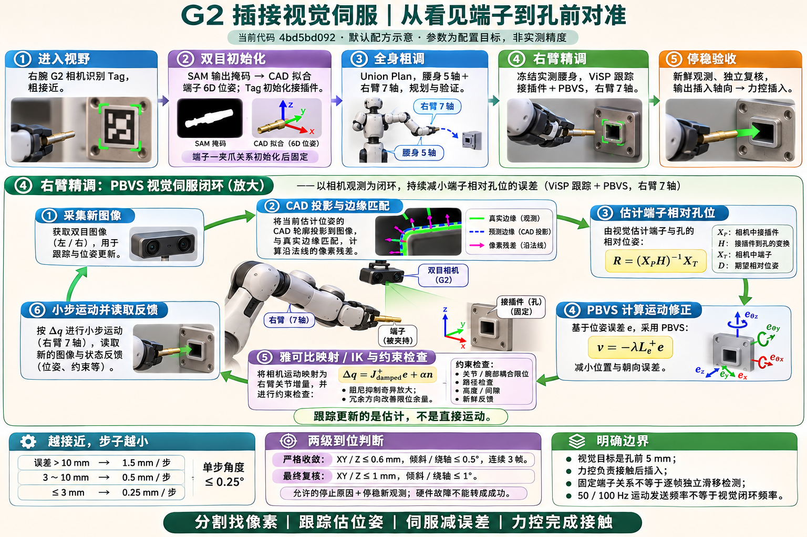

NOTE 29 / SAM · ViSP · VISUAL SERVOING
从看见端子，
到让机器人对准它
SAM 画出物体的边界，ViSP 追踪它的位置与朝向，视觉伺服让机器人一步步靠近目标。沿着一次插接任务，看清这三者如何协作。
2026-11-26 补充：先看总图，再沿正文理解算法。图中是本轮核查的配置快照，不代表所有机器人已部署，也不是实测精度。

1. 先看清整条链路
机器人要把端子对准连接器孔位，首先要在图像里找到目标，再求出目标的空间位置和朝向，然后在运动中持续更新估计，最后把误差变成运动指令。把这四步都叫“视觉识别”，会掩盖真正的算法边界。
| 模块 | 输入 | 输出及含义 |
|---|---|---|
| SAM 分割 | 图像、点/框/掩码提示 | 二维掩码：哪些像素属于目标 |
| CAD 位姿初始化 | 掩码、模型、内参、初值/搜索域 | 物体相对相机的六自由度位姿 |
| ViSP 模型跟踪 | 新图像、CAD、内参、上一帧位姿 | 更新后的位姿和跟踪质量 |
| 视觉伺服 | 当前与期望的相对位姿 | 笛卡尔速度、位移或关节指令 |
本文以刚性端子和已知 CAD 连接器为教学场景。图中数据均为解释算法的合成例子，不代表某台机器的精度或实际运行时间。SAM 2 和 ViSP 是不同工具；把两者串起来属于应用层的设计，不是它们天然提供的一条完整插接流水线。
2. SAM：先把目标分出来
SAM 是 Segment Anything Model，即可提示的分割模型。“提示”告诉模型这次要分哪个区域：正点表示目标、负点排除背景，框给出大致范围，已有掩码给出更完整的空间约束。它输出的 mask 可以理解为与图像同宽高的布尔数组；掩码为真的地方属于本次指定的目标。原始 SAM 与 SAM 2 的提示式分割不等同于任意自然语言识别。
图像编码器把 RGB 转成可计算的视觉特征；提示编码器表达“看这里、排除那里”；掩码解码器综合两者生成目标区域。相同图像交互修改提示时，可以复用已计算的图像特征。模型给出的质量分数是掩码质量的估计，不能当成机器人位姿的置信度。参见 SAM 原始论文。
SAM 2 多出的能力：记住前面分过谁
SAM 2 将图像与视频分割纳入统一框架。视频处理中，当前图像特征结合历史记忆来生成当前掩码，再将有用的目标信息写入记忆。这样无需每帧重新人工点选目标。SAM 2.1 是这一系列的后续模型更新；具体加载哪个版本取决于配置和权重。依据 SAM 2 论文与官方实现。
一种工程接法是把“有标注掩码的参考图”和“现场图”组织成短序列，再传播掩码。这借用了视频分割能力，但跨图的视角、外观、遮挡差异可能远大于正常相邻帧，不能保证匹配正确。需要额外检查区域面积、位置、连通性和模型重投影的一致性。
# SAM 2 图像模式示意；predictor 已用匹配的配置与权重创建
predictor.set_image(rgb_image) # 计算 / 保存当前图像特征
masks, scores, logits = predictor.predict(
point_coords=np.array([[320, 240], [410, 240]]),
point_labels=np.array([1, 0]), # 正点、负点
multimask_output=True,
)
# scores 用于候选筛选；还要做应用层几何检查
mask = masks[int(np.argmax(scores))]视频模式则使用独立的状态管理接口，例如 init_state、add_new_mask 与 propagate_in_video。模型权重可以长期驻留，任务的图像记忆不能不加区分地跨工件复用。示例接口以官方 SAM 2 仓库为依据；部署时应固定代码、配置与权重版本。
3. 一张掩码，为什么还不是位姿
掩码只告诉你“这片像素像端子”。它没有毫米单位，也没有给出绕三个轴的旋转角。要获得三维位姿，需要额外几何信息，例如已知尺寸的 CAD、相机标定、深度或双目观测。
统一记号： 把物体系 O 中的点变换到相机系 C。CAD 点 先经过刚体变换，再经过针孔投影：
保持 CAD 不变，调整 R、t，就能改变模型在图像里的轮廓。将投影轮廓与 SAM 掩码边界对齐，就得到一个位姿候选。实际实现还必须处理镜头畸变、可见性和遮挡；不能把背面不可见的 CAD 边也强行压到图像边缘上。
这里 是到观测掩码边界的距离， 是模型轮廓点的齐次坐标， 表示包含内参的透视投影， 是抑制异常值的损失。优化时仅使用当前可见轮廓。这个单向距离目标仅用于说明原理；它可能让模型的一小段贴住局部边界，工程中常补充双向轮廓距离、面积/重叠约束、先验和多初值搜索。
双目时分别计算左右相机中的投影误差，使用已标定的左右外参把两路观测约束到同一个物体位姿。它能改善深度约束，但并不会自动消除圆柱、对称端子等物体的旋转歧义。掩码准确、模型尺寸正确、标定正确，三者缺一不可。
这一步通常比局部跟踪更重：初值未知时可能需要搜索多个平移和旋转候选，每个候选还要渲染或计算投影。应将这段时间单独计为“位姿初始化”，避免全部归到 SAM 推理。
4. ViSP：让模型追上图像
ViSP 是 Visual Servoing Platform，一套视觉伺服软件库。“ViSP 跟踪器”必须进一步说明类型：这里讲的是基于已知三维模型的跟踪，重点是 moving edges（移动边缘）。ViSP 还支持其他视觉特征与组合方式，不能把整个库理解成一个神经网络。参见 ViSP 项目。
一帧的处理顺序是：用预测位姿投影可见 CAD 边；在投影边上采样；沿边缘法线的一小段范围检查图像灰度变化；选择相容的边缘响应；用这些对应关系修正位姿。再投影、再匹配，直到局部迭代收敛。前一帧的结果通常提供下一帧初值，也可加入运动预测。
为什么沿法线？沿着一条直边滑动，局部图像几乎不变；跨过边缘，亮度变化最明显。因此单个边缘点主要约束垂直于边的方向，沿边方向的位移并不好估计。这是局部可观测性的限制，不是增大迭代次数就能解决的。
官方示例通过 vpMbGenericTracker 组织模型跟踪，用 vpMe 配置边缘采样、搜索范围等参数。调大搜索范围可以容纳更大初始偏差，也会增加搜索量和误匹配机会。具体 API 与版本见官方实时跟踪示例。下面是生命周期示意，并非完整可编译程序：
// 初始化阶段：设置模型、相机、边缘参数和可信初值
tracker.setCameraParameters(cam);
tracker.loadModel(model_path);
tracker.initFromPose(image, cMo_initial);
// 每帧：更新估计；不会自动驱动机器人
tracker.track(image);
tracker.getPose(cMo);
// 应用层随后检查残差、有效边缘比例、时间戳与位姿跳变跟踪失败时应进入重定位或停止使用该估计的状态。调用返回成功不等于估计正确：背景中的平行边、反光亮带、遮挡后露出的另一条边，都可能使优化在错误对应关系上收敛。
5. 跟着算一次位姿修正
先看一般形式。设投影点 ，匹配到的图像边缘点为 ，边缘单位法线为 。固定本轮对应关系，残差为：
包含三个平移和三个旋转小增量。本文选左乘更新 ，平移与旋转增量均在相机坐标系表达，排列为 。对相机系点 ，点的增量是 ，因而一行残差雅可比为：
符号 是叉乘矩阵，满足 ；帽符号把六维增量写成对应的李代数矩阵，矩阵指数再将其映射回刚体变换。雅可比把“移动或转动一点”翻译成“像素残差变化多少”。这与机器人 IK 的思想相通，但未知量不同：这里修改的是估计位姿，IK 修改的是关节角。
这是带阻尼的加权最小二乘教学形式。 可以降低异常对应点的影响； 防止病态方向产生过大增量。真实六维计算应考虑米与弧度的尺度，或者使用经过尺度化的阻尼矩阵。ViSP 的具体求解细节以所用跟踪器、配置和版本为准；不要把这条教学方程当成所有模式完全相同的源码实现。
手算练习：只沿 X 方向修正
假设 ，，，当前模型边缘 。因此投影 ；图像里的真实边缘位于 。法线朝向图像右侧，于是 。
所以本轮应把模型估计往相机 X 负方向修正 2 mm。机器人尚未运动。这个无阻尼算例能一步归零，是因为深度固定、只优化 X，此时投影关于 X 是线性的。
若为了演示阻尼取 ，则 ，更新后 ，残差剩 。阻尼让一步更保守；它不是“精度变差”的同义词。
一条竖边不足以解六自由度。真实跟踪必须结合分布充分、方向多样的边缘；否则 可能接近奇异。鲁棒权重能压低离群点，却无法凭空创造图像里不存在的几何约束。
6. 让估计进入运动闭环
跟踪器回答“物体现在在哪里”，控制器回答“机器人下一步怎么动”。一个插接任务往往同时涉及端子 T、连接器 P 和孔位 H 三个物体系。由两路相机系估计与已知孔位几何得到：
把端子坐标映射到孔位坐标，表达两者的相对位置与朝向。期望变换 D 可以定义为“端子轴线与孔轴重合，沿孔轴保留一段接近距离”。接近距离要结合工装、接触策略和实际标定确定。
PBVS（Position-Based Visual Servoing，基于位姿的视觉伺服）使用估计的空间位姿构造特征误差 e。设所选特征满足 ，则局部控制律可写为：
v 是按定义表达在指定坐标系的六维速度， 是相应交互矩阵，λ 是增益。只有坐标系、误差方向和速度约定一致，这个负号才表示减小误差。用机器人雅可比将速度映射为关节速度时，也必须先对齐速度坐标系及参考点，不能直接把相机坐标速度塞进基座坐标雅可比。
工程上还需限制速度、加速度和关节范围，并检查运动路径。PBVS 本身不提供避障。到位判断应同时看平移误差、旋转误差、持续稳定帧数和观测新鲜度；视觉对准完成也不代表已经插入，接触后的插接通常需要力或位移等独立判据。关于视觉伺服的交互矩阵与控制律，参见 Chaumette 与 Hutchinson 的视觉伺服教程。
若端子被夹持后采用固定的夹爪—端子变换，可以减少重复视觉计算；代价是无法仅凭该固定关系发现夹持滑移。应根据装配精度与风险增加周期复核、独立视觉观测或接触确认，而不是把固定假设当作永久事实。
当前实现：全身粗调，再用右臂精调
本轮代码快照的默认配方选择 union_plan_full_body_right。工业双目初始化端子和接插件后，联合使用腰身五轴与右臂七轴粗调。到位后冻结实测腰身，右臂七轴执行小范围精调。粗调解决可达性和姿态余量，精调减少对准期间的大范围身体运动。
端子采用 fixed_after_init：初始化后固定端子相对夹爪的关系，接插件则持续更新视觉估计。这样减少重复计算，但不提供逐帧独立滑移检测。即使存在滑移检查，也要核对输入是否含有新的端子观测。
末端 PBVS 与关节 PBVS 怎样衔接
普通 pbvs 返回端子系运动修正，控制层通过端子相对法兰的变换，把它转换为法兰目标，再限幅并通过 IK 生成关节轨迹。端子尖端不在法兰原点，不能简单地让法兰原地旋转来代替端子姿态修正。
位置误差不超过3 mm且关节控制启用时，选择 pbvs_joint，传入法兰局部雅可比和端子—法兰关系，由返回的关节速度构造轨迹。位置误差是横向和轴向误差的平方和开根号；角度误差仍独立检查。
七关节多出的自由度用在哪里？
当前 IK 对六行七列的雅可比做 SVD。任务增量使用阻尼伪逆，奇异值的权重为，抑制接近奇异位置时的运动放大。随后沿冗余方向追加一个受限增量，在一阶近似下保持任务运动，同时改善关节余量。
代码把关节上下限与腕部耦合约束一起纳入可行区间，选择冗余调整量，再逐步校正非线性 FK 残差。这个计算属于机器人 IK；ViSP 的模型跟踪更新的是物体估计位姿，两者的未知量不同。
越接近目标，步子越小
| 位置误差 | 单步平移预算 |
|---|---|
| 大于10 mm | 1.5 mm |
| 大于3 mm、不超过10 mm | 0.5 mm |
| 不超过3 mm | 0.25 mm |
另设单步角度上限0.25°。每次发送前检查路径、关节及腕部耦合限位、高度、孔前间隙与反馈状态。50 Hz或100 Hz是对应运动发送或轨迹频率，不是整条视觉闭环频率；视觉一轮还包含采图、估计、通信、运动和到位确认。
7. 时间到底花在哪里
启动阶段与稳态阶段的工作量不同。模型加载、GPU 首次调用、CAD 解析、参考图处理、分割、全局位姿搜索、首次跟踪质量检查，可能都发生在第一条运动指令之前。之后每帧只做局部更新，便会显得“先停很久，随后快速对准”。
| 阶段 | 优先测什么 | 可优化方向 | 不可省略的边界 |
|---|---|---|---|
| 资源准备 | 加载与重复配置次数 | 权重、CAD、静态配置驻留 | 模型/标定版本变更时失效 |
| 图像采集 | 时间戳、等待、解码、传输 | 流水化，减少冗余拷贝 | 不能用陈旧帧冒充实时帧 |
| SAM | 预处理、编码、解码分别耗时 | 同图复用特征，合适的模型规模 | 重新测分割质量 |
| 位姿初始化 | 候选数与单次拟合成本 | 可信初值、粗到细搜索 | 防止收缩搜索域后漏解 |
| ViSP 跟踪 | 有效边缘数、迭代数、失败率 | 合理采样与搜索范围 | 不能用稀疏采样掩盖退化 |
| 运动执行 | 规划、排队、运动、稳定等待 | 按实际稳定性判定，避免固定冗长等待 | 保留到位及观测质量检查 |
用单调时钟记录每段开始和结束，并用同一任务标识串起来。GPU 操作可能异步提交，直接量 Python 调用的返回时间可能只量到排队；应采用与被测工作对应的事件或适当同步，避免把异步执行漏掉。
对缓存，明确“缓存键”和“生命周期”：相机内参、CAD 版本、对象类型变化时需要更新相关资源；工件换了，需要重建该任务的掩码记忆和位姿状态。合理优化是减少重复准备，前提是每次任务仍由新鲜观测建立可信初值。比较优化前后时，除了平均延迟，还要比较长尾、失败重试和最终误差。
8. 怎样确认它真的可靠
分层验收能避免“图上叠得很好，所以插接一定准确”的误判：
- 分割：与独立标注比较掩码重叠率及边界偏差，覆盖反光、背景变化和遮挡条件。
- 位姿：使用独立几何或测量基准评估平移、旋转误差；重投影误差小并不保证深度准确。
- 跟踪：记录持续有效率、失锁次数、位姿跳变和恢复耗时。评估退化视角，不能只看最容易的一段。
- 伺服：测收敛时间、稳态误差、超调与无效观测期间的行为，再评价接触和插接结果。
记住三个输出就能定位问题：SAM 输出像素区域，ViSP 模型跟踪输出位姿估计，视觉伺服输出运动指令。掩码错了先查分割；掩码对但 CAD 对不上，查标定、模型、初值和几何约束；位姿可信但机器人走偏，查坐标变换、TCP、控制映射与执行反馈。
严格收敛与最终对准，分别记录
| 检查 | 当前默认条件 |
|---|---|
| 严格收敛 | 横向、轴向误差各≤0.6 mm；倾斜、绕轴误差各≤0.5°；连续3帧。 |
| 最终复核 | 停稳后使用新鲜观测，位置两项各≤1 mm，角度两项各≤1°。 |
程序分别记录 strictly_converged、final_alignment 和 stop_reason。某些允许的结束原因，例如步数耗尽或不再明显改善，仍会进入独立最终复核；在停稳、观测有效且误差达标时，可以返回最终对准通过，同时保留未严格收敛的事实。人工停止、硬件故障等不能仅凭几何误差达标改成成功。
视觉目标仍是孔前5 mm。对准通过后输出端子轴向，交给力控接触与插入。配置门限、估计误差和实际装配精度是三个层次，上述数字不能替代独立测量与真机验收。
9. 原始资料与继续阅读
- Kirillov 等：Segment Anything（2023）——提示式图像分割。
- Ravi 等：SAM 2（2024）——图像与视频分割、流式记忆。
- SAM 2 官方代码与示例——配置、权重、图像与视频推理接口。
- ViSP 官方项目及模型跟踪示例——核对具体类型及接口。
- Visual servo control, Part I: Basic approaches——交互矩阵、IBVS 与 PBVS。
配图为原创算法示意。公式由 KaTeX 排版，字体和样式随站点提供，遵循 MIT 许可。数学算例采用本文明确列出的简化假设；示例代码省略设备、模型加载和异常恢复，不能直接作为真机控制程序。继续阅读：相机标定、手眼标定、FK 与 IK。